比較ページ
オリエンテーション AI時代の仕事から参加につなぐ改訂案｜変更前後の比較
この短縮案は差し戻し。教材の具体例と到達像を削ったこと、文字カード中心のデザインが適切でないことを指摘いただいた。右側を採用済みとして扱わない。
次の修正方針：変更前14枚を土台に、AI時代のPM・PLと開発者の導入を加える。PMの仕事の具体、教材1〜3、教材ごとの積み上がりは保持する。
興味を引く導入 → 得られる力 → 教材の具体例 → 教材ごとの変化 → 自分の仕事への置き換え → 参加して試す、の流れにする。短縮を先に目標にしない。
図は変更前の業務や因果関係を示すデザインを土台にする。文字カードを一律に並べる形にはしない。ここからは1枚ずつ比較して確認する。
今回更新したのはこの比較ページの方針説明と再構成案のみ。教材本体は短縮版のままで、復元・再生成はまだ実施していない。
現状：リポジトリの最新版は既に原稿・スライド・PDF・音声・動画まで新版へ置き換わっている。今回は確認前に制作まで進めてしまった。変更前はバックアップに保存している。
このページの右側は未承認の案。今回の作業では比較ページの作成のみ行い、教材本体の追加修正・復元はしていない。
左：今回の変更直前の14枚。右：作成済みの10枚。動画は22分21秒から7分40秒へ短縮した。
画像・見出し・導入文・原稿全文を左右に並べ、原稿は文単位の差分を表示する。追加・削除した枚も省略しない。
大きく再構成したため、対応する役割の枚を比較用IDで並べている。新ID→旧ID：I0-N01→I0-S0B、I0-N02→I0-S2、I0-N04→I0-S0A、I0-N05→I0-SE、I0-N06→I0-S3、I0-N08→I0-SP、I0-N09→I0-S5。制作元のIDは変更していない。
教材2・3・到達段階の説明は新6枚目へ集約。PM・PLの計画・判断と、開発者のレビューの悩みを入口に置く案。内容の承認はまだ得ていない。
全16枚 ／ 変更16枚
オリエンテーション：変更前14枚 → 変更後10枚（案）
下期AI活用ワークショップ
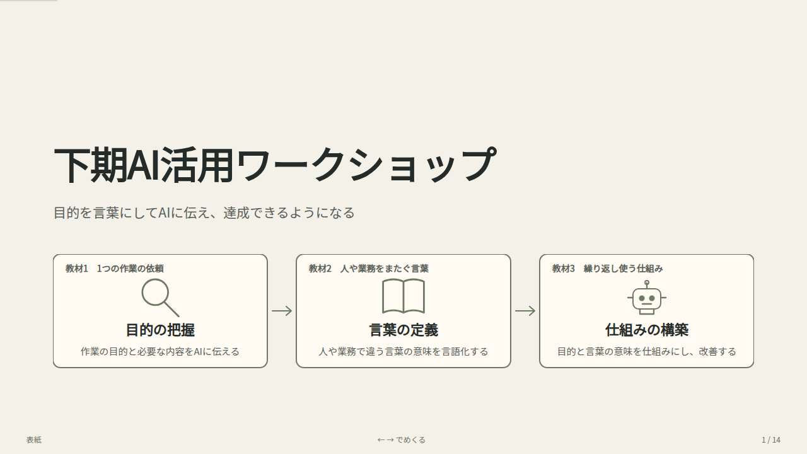
導入文 目的を言葉にしてAIに伝え、達成できるようになる
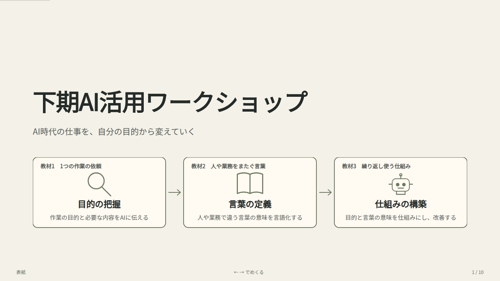
導入文 AI時代の仕事を、自分の目的から変えていく
| 観点の群 | 結果 | 見つけたこと | 直したこと |
|---|---|---|---|
| 論とストーリー | 保留 | 副題を「AI時代の仕事を、自分の目的から変えていく」に変更した。3教材の図はそのまま。 | ユーザーによる内容・構成の確認は未実施。ここから1枚ずつ比較して確認する。 |
| 図の表現 | 保留 | 変更前の図と原稿を残して、削除・集約の妥当性を確認する。 | 変更の承認を得たという扱いにはしない。 |
AIで作るのが速くなっても、案件の完了は別に確かめます
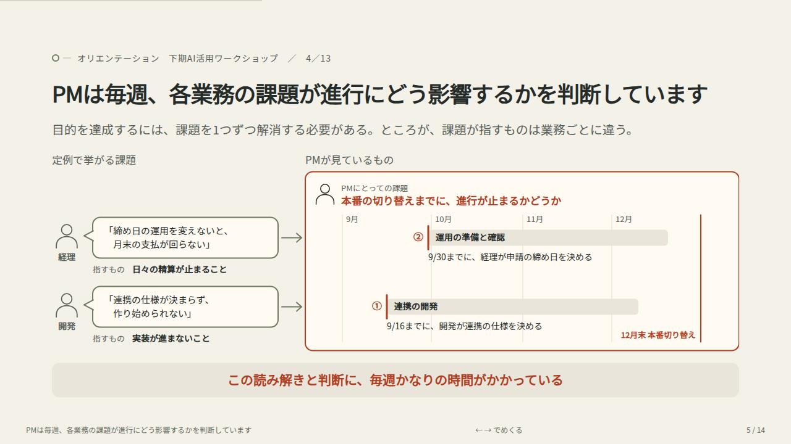
見出し PMは毎週、各業務の課題が進行にどう影響するかを判断しています
導入文 目的を達成するには、課題を1つずつ解消する必要がある。ところが、課題が指すものは業務ごとに違う。
では、PMは毎週、どんな仕事をしているのでしょうか。
案件を止めずに進めるには、進行の妨げになっていることを見つけて、1つずつ解消していく必要があります。
この妨げになっていることを、課題と呼びます。
定例では、それぞれの業務から課題が挙がります。
図の左です。
経理からは、締め日の運用を変えないと、月末の支払が回らない、という課題が出ます。
開発からは、連携の仕様が決まらず、作り始められない、という課題が出ます。
同じ課題という言葉でも、経理が指しているのは、日々の精算が止まることです。
開発が指しているのは、実装が進まないことです。
PMは、それぞれの課題が、本番の切り替えにどう影響するかを確認します。
図の右です。
PMは定例のあと、議事録を読み返して、課題を1つずつ読み解きます。
連携の仕様は、9月16日までに開発が決めないと、連携の開発を始められません。
締め日は、9月30日までに経理が決めないと、運用の準備が進みません。
それなら、連携の仕様を先に決めよう、と判断します。
こうして、どれから決めるかの優先順位を付けていきます。
図の下のとおり、この読み解きと判断に、毎週かなりの時間がかかっています。
AIに任せられれば短くなるはずですが、いまはまだ任せられていません。
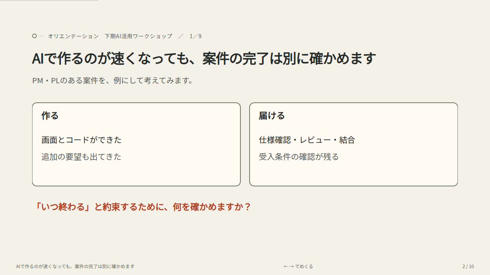
見出し AIで作るのが速くなっても、案件の完了は別に確かめます
導入文 PM・PLのある案件を、例にして考えてみます。
「AIを使えば、実装はもっと早くできます」。
メンバーからそう聞いて、計画を見直した。
実際、画面もコードも早くできた。
顧客に見せると、「これもできる？
」と追加の要望が出てきた。
でも、仕様の確認はまだ終わっていない。
レビュー待ちもある。
結合テストへの影響も確認が必要です。
これは、架空の案件の場面です。
皆さんの仕事では、どうでしょうか。
作るのは速くなった。
では、この案件は、いつ終わると約束できるでしょうか。
AIで作業が速くなると、計画や進捗の見方も、それに合わせて考え直す必要があります。
| 観点の群 | 結果 | 見つけたこと | 直したこと |
|---|---|---|---|
| 論とストーリー | 保留 | 旧「毎週の課題整理」を、新「AIで実装が速くなった案件」に置き換えた。AI時代の計画・完了判断を入口にする案。 | ユーザーによる内容・構成の確認は未実施。ここから1枚ずつ比較して確認する。 |
| 図の表現 | 保留 | 変更後の本編は2〜3列の文字カード中心。主張を場面や因果関係として見せる表現は、改善の余地がある。 | 変更の承認を得たという扱いにはしない。 |
PM・PLは、速くなった作業を計画と判断につなげます
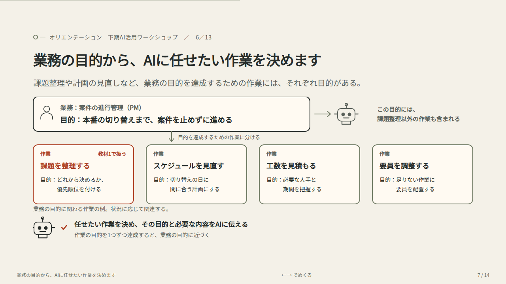
見出し 業務の目的から、AIに任せたい作業を決めます
導入文 課題整理や計画の見直しなど、業務の目的を達成するための作業には、それぞれ目的がある。
それを決めるために、PMの業務を、作業ごとに見ます。
図の上です。
PMの業務の目的は、本番の切り替えまで、案件を止めずに進めることです。
では、この目的をそのままAIに依頼したら、どうなるでしょうか。
案件を止めずに進めるためには、複数の作業が必要です。
業務の目的は、1つの作業では達成できないからです。
PMはこの目的のために、いくつもの作業をしています。
図の真ん中です。
たとえば、課題を整理する、スケジュールを見直す、工数を見積もる、要員を調整する、といった仕事です。
この1つずつを、作業と呼びます。
作業にも、それぞれの目的があります。
課題を整理するのは、どれから決めるか、優先順位を付けるためです。
スケジュールを見直すのは、切り替えの日に間に合う計画にするためです。
これらの作業は、状況に応じて関連します。
たとえば、課題管理表で遅れの可能性を確認したら、スケジュールを見直します。
必ずこの順番で行うわけではありません。
業務の目的には、こうした複数の作業が含まれています。
今回は、その中から、議事録をもとに課題管理表を作る作業をAIに任せます。
図の下です。
任せたい作業を決めたら、その目的と必要な内容をAIに伝えます。
AIに依頼するときの1回の単位は、この作業です。
作業の目的を1つずつAIで達成していけば、業務の目的に近づきます。
では、教材1では、どの作業から始めるのでしょうか。
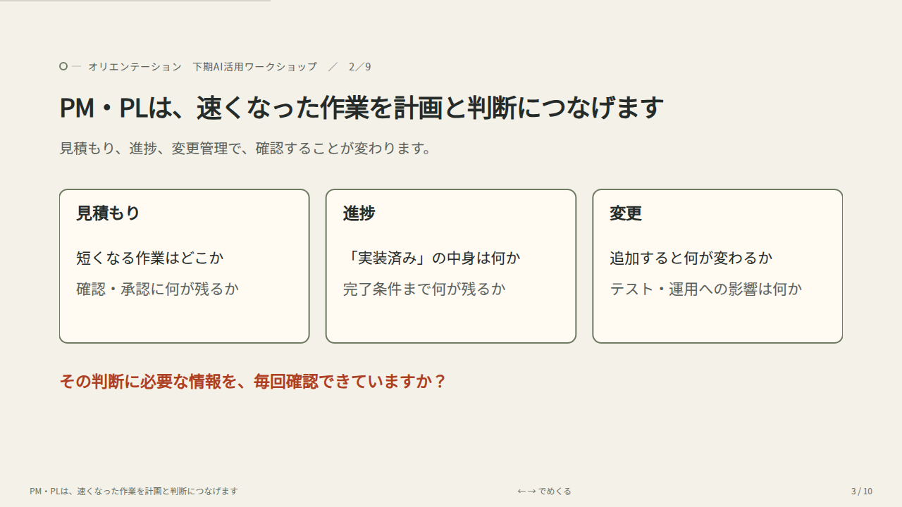
見出し PM・PLは、速くなった作業を計画と判断につなげます
導入文 見積もり、進捗、変更管理で、確認することが変わります。
PMやPLの仕事には、目的とスコープを合わせること、工数や要員、日程を組むこと、依存関係や品質を見ること、変更を関係者と調整することがあります。
AIで実装を短縮できるとしても、仕様の合意や顧客の承認まで、同じ割合で短くなるとは限りません。
見積もりでは、どの作業が短くなり、どの確認が残るのか。
進捗では、「実装できた」が、レビューまで終わった意味なのか。
変更では、「すぐ作れる」という追加が、テストや運用に何を増やすのか。
こうしたことを確かめて、日程や対応を判断します。
皆さんがいま、説明し直したり、報告を聞き直したりしているのは、どの場面でしょうか。
| 観点の群 | 結果 | 見つけたこと | 直したこと |
|---|---|---|---|
| 論とストーリー | 保留 | PMの作業一覧から、PM・PLの見積もり・進捗・変更管理の具体的な確認事項へ改めた。 | ユーザーによる内容・構成の確認は未実施。ここから1枚ずつ比較して確認する。 |
| 図の表現 | 保留 | 変更後の本編は2〜3列の文字カード中心。主張を場面や因果関係として見せる表現は、改善の余地がある。 | 変更の承認を得たという扱いにはしない。 |
開発者も、コードの速さだけでは仕事を終えられません
この枚は新しく追加したものである。変更前には無い。
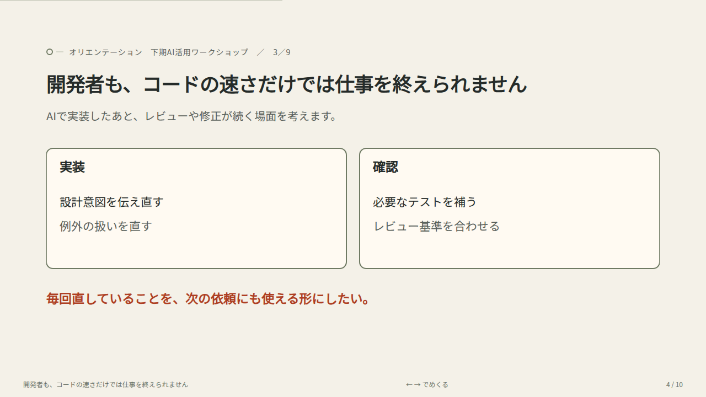
開発をしている皆さんにも、別の角度から同じ問題が現れます。
AIがコードを書いてくれた。
でも、既存の設計方針と合わない。
正常系は動くけれど、エラー時の扱いが違う。
テストも生成されたけれど、確認したい境界条件が抜けている。
修正を頼むたびに、同じ説明を繰り返していませんか。
チームのレビューでも、作った人によって確認の基準が違えば、指摘と手戻りが続きます。
速くコードが出ることと、仕様や品質を満たして変更を届けられること。
その間にある基準を、どうAIに伝えるかが、自分の仕事の問題になります。
| 観点の群 | 結果 | 見つけたこと | 直したこと |
|---|---|---|---|
| 論とストーリー | 保留 | 開発者の設計意図・例外処理・テスト・レビューの手戻りを入口に追加した。PM向けの話だけで終わらせないため。 | ユーザーによる内容・構成の確認は未実施。ここから1枚ずつ比較して確認する。 |
| 図の表現 | 保留 | 変更後の本編は2〜3列の文字カード中心。主張を場面や因果関係として見せる表現は、改善の余地がある。 | 変更の承認を得たという扱いにはしない。 |
自分が確かめている基準を、AIに伝える形にします
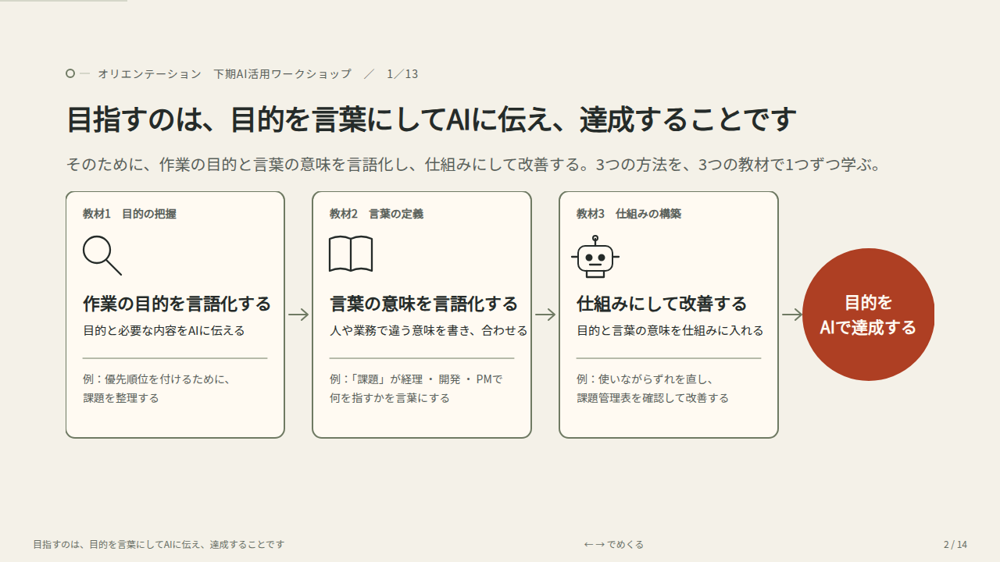
見出し 目指すのは、目的を言葉にしてAIに伝え、達成することです
導入文 そのために、作業の目的と言葉の意味を言語化し、仕組みにして改善する。3つの方法を、3つの教材で1つずつ学ぶ。
はじめに、このワークショップで目指すことをお話しします。
目指すのは、目的を正しく言葉にしてAIに伝え、AIで達成できるようになることです。
AIに依頼しても、思ったものが出てこないことはありませんか。
原因の一つは、作業の目的や必要な内容を、AIに伝えていないことです。
そこで、このワークショップでは、3つの方法を順に学びます。
1つ目は、作業の目的と必要な内容を言葉にして、AIに伝える方法です。
業務全体のような大きな目的のままでは、AIに何を依頼すればいいかが決まりません。
AIに依頼できる大きさまで目的を絞り、言葉にして伝えられるようにします。
これを、教材1で学びます。
2つ目は、人や業務によって違う言葉の意味を、言語化する方法です。
課題や期限のように、ふだん使っている言葉でも、何を指すのかは、人によって違います。
言葉の意味は、最後はSkillやエージェントに書き込みます。
チームで使う仕組みなら、チームのみんなが使います。
意味が人によって違うままだと、使う人によって結果が変わってしまいます。
そこで、言葉が何を指すのかを、自分で言葉にして定義します。
業務によって指すものが違うときは、その違いも言葉にします。
チームで使うなら、同じチームの人に見せて合わせます。
これを、教材2で学びます。
3つ目は、言語化した目的と言葉の意味を仕組みにして、改善していく方法です。
Skillに書き、エージェントがそれを使うようにします。
使って見つかったずれは、直していきます。
これを、教材3で学びます。
この3つを順に学ぶことで、目的を言葉にしてAIに伝え、達成できるようになります。
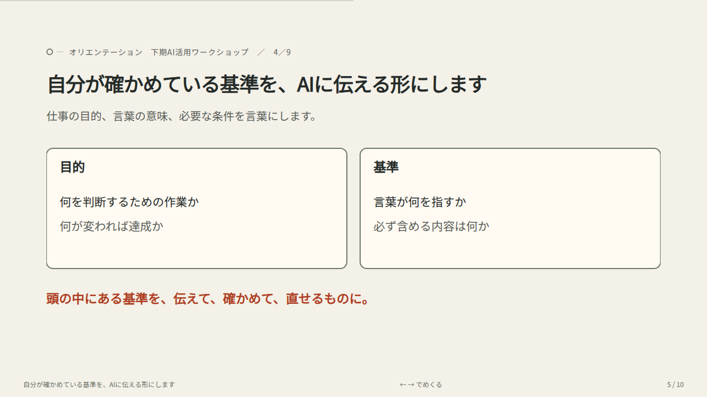
見出し 自分が確かめている基準を、AIに伝える形にします
導入文 仕事の目的、言葉の意味、必要な条件を言葉にします。
ここまでの場面に共通するのは、何のために作業するか、どこまでできればよいかが、AIやチームに十分伝わっているか、という問題です。
例えば「進捗をまとめて」だけでは、日程を見直すために何が必要かは伝わりません。
「実装済み」という言葉も、コードを書いた状態なのか、レビューを終えた状態なのかで、判断が変わります。
事務や管理の仕事でも、AIが整えた資料を毎回同じ理由で差し戻しているなら、確認基準を伝える余地があります。
このワークショップの目的は、自分の目的を正しく言葉にしてAIに伝え、達成できるようになることです。
仕事で使っている基準を言葉にし、AIの出力を確かめながら、任せられる作業を増やしていきます。
| 観点の群 | 結果 | 見つけたこと | 直したこと |
|---|---|---|---|
| 論とストーリー | 保留 | 教材の説明を冒頭から移し、複数の役割の悩みに共通する目的・基準の言語化として紹介する案。 | ユーザーによる内容・構成の確認は未実施。ここから1枚ずつ比較して確認する。 |
| 図の表現 | 保留 | 変更後の本編は2〜3列の文字カード中心。主張を場面や因果関係として見せる表現は、改善の余地がある。 | 変更の承認を得たという扱いにはしない。 |
判断に必要な情報を整理する仕組みを、自分の仕事で作ります
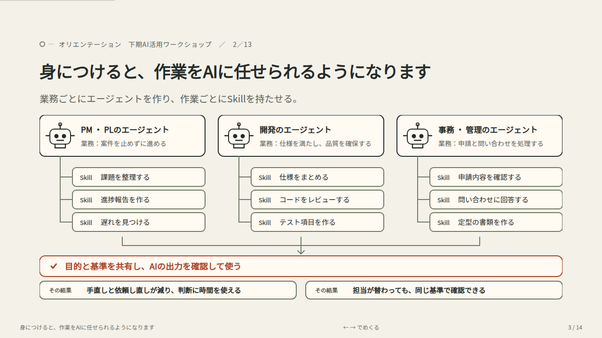
見出し 身につけると、作業をAIに任せられるようになります
導入文 業務ごとにエージェントを作り、作業ごとにSkillを持たせる。
この3つを身につけると、作業をAIに任せられるようになります。
目的と言葉の意味、必要な条件を仕組みに記録し、出力を確認して改善することを学びます。
目指すのは、入力が替わっても目的に必要な内容を出せることです。
これを、再現性と呼びます。
毎回同じ文章が出ることではなく、入力が替わっても、目的から外れないことです。
仕組みの形は、業務ごとのエージェントと、作業ごとのSkillです。
図の上を見てください。
PMやPLなら、案件を止めずに進めることが、業務の目的です。
そのためのエージェントが、課題を整理する、進捗報告を作る、遅れを見つける、といったSkillを使い分けます。
開発なら、仕様を満たし、品質を確保するためのエージェントが、仕様をまとめる、コードをレビューする、テスト項目を作る、といったSkillを使い分けます。
事務や管理の業務でも、同じ形で作れます。
図の下です。
目的に必要な内容が出ているかを確認して使い、合わないところは直します。
任せられる作業の範囲も、その結果を見て決めます。
その結果、手直しと依頼し直しが減り、空いた時間を判断に使えます。
担当が替わっても、同じ基準で出力を確認できます。
では、3つの教材で、どうやってそこまで進むのか。
1つの案件を例にして見ていきます。
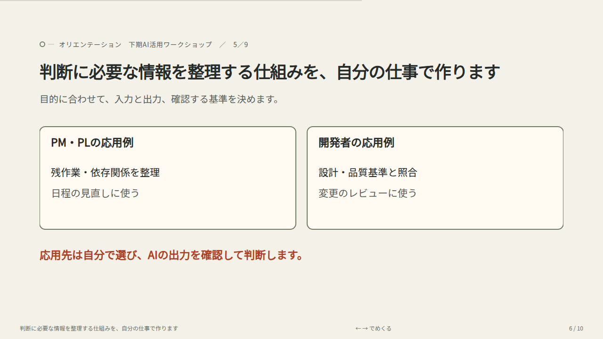
見出し 判断に必要な情報を整理する仕組みを、自分の仕事で作ります
導入文 目的に合わせて、入力と出力、確認する基準を決めます。
例えばPMやPLなら、日程を見直すために、作業の残り、依存する作業、未決定事項を整理する仕組み。
開発者なら、変更をレビューするために、設計方針や例外処理の基準と照らし、確認箇所を整理する仕組み。
これは、自分の取り組みを考えるための応用例です。
AIに見積もりや品質の判断を丸ごと任せるわけではありません。
記録にないことは不明と示し、出力が目的と基準に合うかを、人が確かめます。
このワークショップでは、作業の目的と必要な内容を決め、AIに伝え、出力を見て直す方法を学びます。
その方法を、自分が困っている一つの作業で試します。
| 観点の群 | 結果 | 見つけたこと | 直したこと |
|---|---|---|---|
| 論とストーリー | 保留 | 一般的な効果説明から、PM・PLと開発者が自分の仕事で作る仕組みの応用例へ改めた。 | ユーザーによる内容・構成の確認は未実施。ここから1枚ずつ比較して確認する。 |
| 図の表現 | 保留 | 変更後の本編は2〜3列の文字カード中心。主張を場面や因果関係として見せる表現は、改善の余地がある。 | 変更の承認を得たという扱いにはしない。 |
教材では、一つの作業から仕組みを育てる方法を学びます
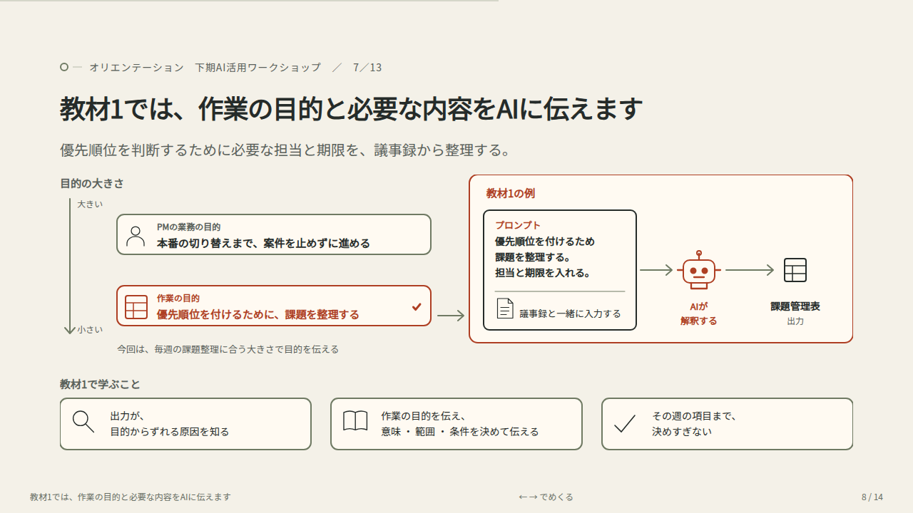
見出し 教材1では、作業の目的と必要な内容をAIに伝えます
導入文 優先順位を判断するために必要な担当と期限を、議事録から整理する。
教材1、目的の把握では、課題を整理する、という作業を例にします。
図の左を見てください。
目的には、大きさがあります。
教材1では、この大きさを、目的レベルと呼びます。
大きいほうが、案件を止めずに進めるという、PMの業務の目的です。
この目的には、課題整理以外の作業も含まれます。
小さいほうが、優先順位を付けるために課題を整理するという、作業の目的です。
この目的に合わせて、入力するものと、出力に必要な内容を決めます。
入力は、週1回の定例の議事録です。
出力は、いつまでに誰が決めるかが入った課題管理表です。
図の右のように、作業の目的をプロンプトに書いて、議事録と一緒に入力します。
するとAIは、そのプロンプトを解釈して、課題管理表を出力します。
図の下が、教材1で学ぶ3つです。
1つ目は、出力が目的からずれる原因を知ることです。
2つ目は、作業の目的をAIに伝え、そこから考えて、言葉の意味、対象の範囲、必ず入れる条件の3つを決めて伝えることです。
3つ目は、その週の議事録に出た項目まで決めないことです。
決めすぎると、その1回にしか使えないプロンプトになってしまいます。
教材1では、担当と期限を含む課題管理表を作るための、目的と共通の条件を決めます。
出力に必要な内容が入ったかも確認します。
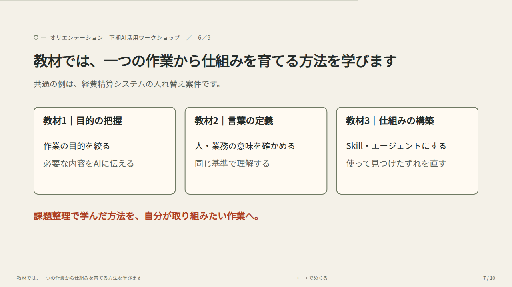
見出し 教材では、一つの作業から仕組みを育てる方法を学びます
導入文 共通の例は、経費精算システムの入れ替え案件です。
教材では、経費精算システムを入れ替える案件を共通の例にします。
その中で、PMが優先順位を判断するための課題整理から始めます。
教材1、目的の把握では、何のために整理するのかと、担当や期限など必要な内容を決めて、AIに伝えます。
教材2、言葉の定義では、人や業務によって異なる言葉の意味を言語化し、チームで確かめます。
工数や遅れの影響を整理するための定義や記録も扱います。
教材3、仕組みの構築では、目的と基準をSkillやエージェントに記録し、使って改善する方法を学びます。
見積もりやプロジェクト管理全般を教える講座ではありません。
この一つの例から方法を学び、自分の仕事に置き換えていきます。
| 観点の群 | 結果 | 見つけたこと | 直したこと |
|---|---|---|---|
| 論とストーリー | 保留 | 教材1・2・3と到達段階の4枚（I0-S3、I0-S3B、I0-S3C、I0-S4）を1枚に集約した。教材の範囲と応用先を区別する。 | ユーザーによる内容・構成の確認は未実施。ここから1枚ずつ比較して確認する。 |
| 図の表現 | 保留 | 変更後の本編は2〜3列の文字カード中心。主張を場面や因果関係として見せる表現は、改善の余地がある。 | 変更の承認を得たという扱いにはしない。 |
参加すると、自分の仕事で試し、相談しながら直せます
この枚は新しく追加したものである。変更前には無い。
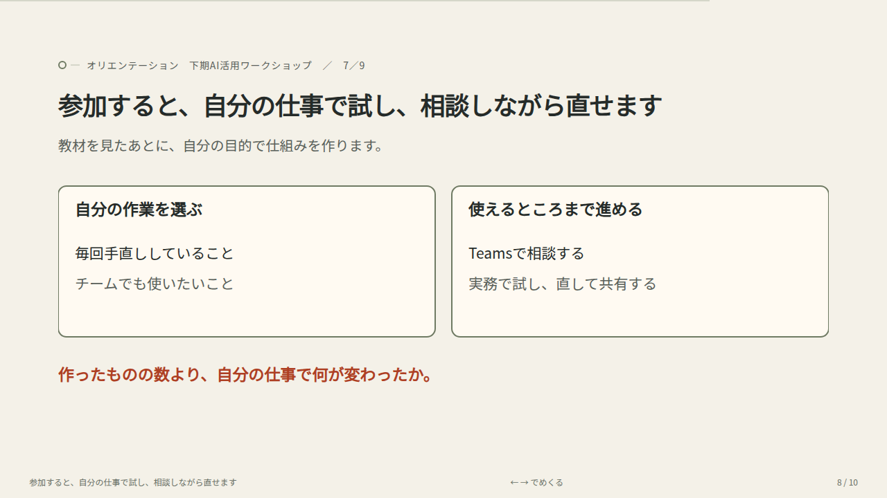
教材を見て終わりではありません。
参加する皆さんは、自分が実現したい目的を選び、そのための仕組みを作ります。
普段からAIを使っている人なら、毎回手直ししている作業や、チームでも使いたい方法を持ってきてください。
まだ何に使うか決まっていない人は、教材の例を見ながら考えられます。
テーマは運営から指定しません。
困ったときはTeamsで相談でき、必要に応じて日程を決めて相談の場を開きます。
作ったものは、自分の業務やチームで使い、合わないところを直します。
最後は、何を作ったかと一緒に、目的に対して何が変わったかを見せ合います。
一人で試して止まっていたことを、相談しながら、実際に使うところまで進める機会です。
| 観点の群 | 結果 | 見つけたこと | 直したこと |
|---|---|---|---|
| 論とストーリー | 保留 | 実務で試し、Teamsで相談して直せることを、ワークショップに参加する価値として追加した。 | ユーザーによる内容・構成の確認は未実施。ここから1枚ずつ比較して確認する。 |
| 図の表現 | 保留 | 変更後の本編は2〜3列の文字カード中心。主張を場面や因果関係として見せる表現は、改善の余地がある。 | 変更の承認を得たという扱いにはしない。 |
教材を見て目的を考え、1月から実務で試します
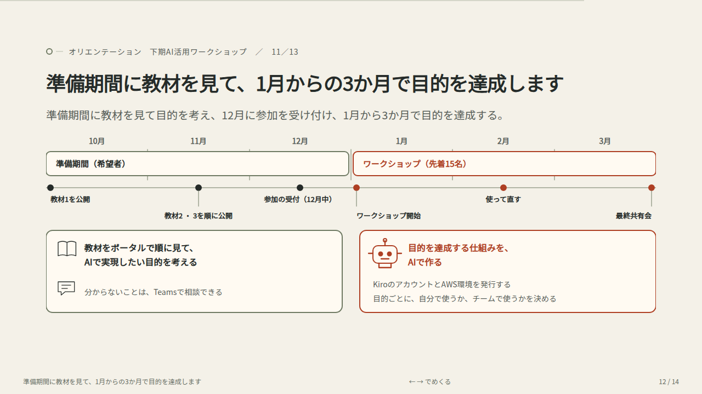
見出し 準備期間に教材を見て、1月からの3か月で目的を達成します
導入文 準備期間に教材を見て目的を考え、12月に参加を受け付け、1月から3か月で目的を達成する。
10月から12月は、準備期間です。
教材は、社内のナレッジ共有ポータルで、10月から順に公開します。
12月までに、3つとも公開します。
教材を見ながら、自分がAIで実現したい目的を考えてください。
分からないことは、Teamsでいつでも相談できます。
12月中に、ワークショップへの参加を受け付けます。
参加するときには、AIで実現したい目的を書いていただきます。
書くのは、4つです。
何を実現するか。
誰のためか。
何が変われば達成か。
そして、達成に何が必要か、です。
何が変われば達成かは、作り始める前に決めておきます。
終わったときに、達成できたかを確かめる基準になるからです。
目的は、いくつ書いても構いません。
あわせて、目的ごとに、作った仕組みを誰が使うかを書きます。
自分だけが使うなら、自分で使う仕組みです。
同じチームの人も使うなら、チームで使う仕組みです。
チームで使う仕組みは、自分で定義した言葉の意味を同じチームの人に見せて直してから作ります。
目的を書けた人から先着15名で受け付け、1月からワークショップを始めます。
参加する人には、KiroのアカウントとAWS環境を発行します。
AIツールは、Kiro、Claude、Copilotのどれを使っても構いません。
1月から3月までの3か月で、目的を達成する仕組みをAIで作ります。
2月には、作った仕組みを、自分の業務やチームで実際に使って直します。
そして3月の最終共有会で、作った仕組みを見せ合います。
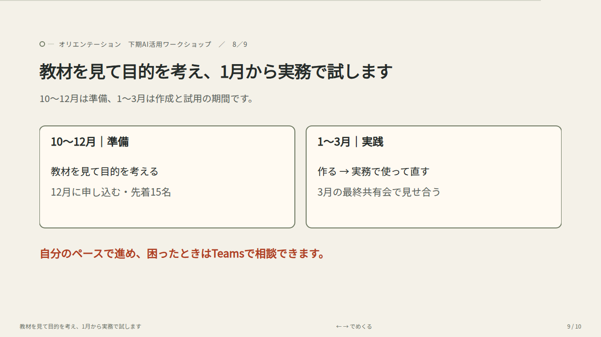
見出し 教材を見て目的を考え、1月から実務で試します
導入文 10〜12月は準備、1〜3月は作成と試用の期間です。
進め方です。
10月から12月は準備期間です。
教材はナレッジ共有ポータルで順に公開します。
分からないことはTeamsで相談しながら、自分がAIで実現したい目的を考えてください。
12月中に参加を受け付けます。
何を実現するか、誰のためか、何が変われば達成か、達成に何が必要かを書きます。
目的はいくつ書いても構いません。
目的ごとに仕組みを誰が使うかも決めます。
目的を書けた人から先着15名で受け付け、1月にKiroのアカウントとAWS環境を発行します。
Kiro、Claude、Copilotのどれを使っても構いません。
日常の学習と作成は、各自で時間を見つけて進めます。
1月から仕組みを作り、2月は自分の業務やチームで使って直します。
3月の最終共有会で、達成できたことを見せ合います。
| 観点の群 | 結果 | 見つけたこと | 直したこと |
|---|---|---|---|
| 論とストーリー | 保留 | 日程・参加条件を引き継ぎ、各自で進めることと相談の方法を明記した。 | ユーザーによる内容・構成の確認は未実施。ここから1枚ずつ比較して確認する。 |
| 図の表現 | 保留 | 変更後の本編は2〜3列の文字カード中心。主張を場面や因果関係として見せる表現は、改善の余地がある。 | 変更の承認を得たという扱いにはしない。 |
毎回つまずく一つの作業を、今回の取り組みにできます
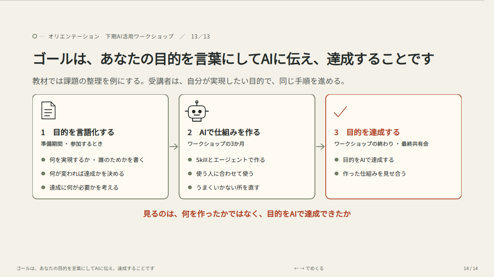
見出し ゴールは、あなたの目的を言葉にしてAIに伝え、達成することです
導入文 教材では課題の整理を例にする。受講者は、自分が実現したい目的で、同じ手順を進める。
最後に、このワークショップのゴールをお話しします。
3つの教材では、ここまでの案件と、課題を整理するという作業を例にして進めます。
ただ、身につけていただきたいのは、課題を整理する方法ではありません。
自分が実現したい目的を、言葉にしてAIに伝え、達成できるようになることです。
ですから皆さんには、自分が実現したい目的で、教材と同じ手順を進めていただきます。
自分の業務のことでも、チームのことでも構いません。
図の左から順に見ていきます。
まず、目的を言葉にします。
何を実現するか、誰のためか、何が変われば達成か、達成に何が必要か、を書きます。
次に、ワークショップの3か月で、目的を達成する仕組みを、Skillとエージェントで作ります。
作った仕組みは、使う人に合わせて使い、うまくいかない所を直します。
そして最後に、最終共有会で、目的をAIで達成できたかを見せ合います。
見るのは、何を作ったかではありません。
目的をAIで達成できたかです。
それでは、教材1に進みます。
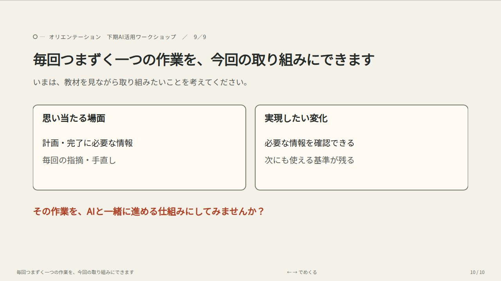
見出し 毎回つまずく一つの作業を、今回の取り組みにできます
導入文 いまは、教材を見ながら取り組みたいことを考えてください。
AIで実装が速くなったあと、何を見て計画を立て直すか。
できたという報告を、何をもって完了と判断するか。
AIに毎回指摘している設計や品質の基準を、どう次にも使うか。
どれか一つ、自分の仕事に思い当たる場面はあったでしょうか。
その場面で何を実現したいかを、教材を見ながら考えてみてください。
AIが使える今、自分が確かめている基準を、繰り返し使える仕組みにすることに取り組めます。
教材と相談の場を使って、自分の仕事で試すところまで進めましょう。
目的を言葉にしてAIに伝え、達成できるようになる。
それが、このワークショップのゴールです。
それでは、教材1に進みます。
| 観点の群 | 結果 | 見つけたこと | 直したこと |
|---|---|---|---|
| 論とストーリー | 保留 | ゴールの再説明から、思い当たる一つの作業を教材で考えてみる呼びかけへ改めた。 | ユーザーによる内容・構成の確認は未実施。ここから1枚ずつ比較して確認する。 |
| 図の表現 | 保留 | 変更後の本編は2〜3列の文字カード中心。主張を場面や因果関係として見せる表現は、改善の余地がある。 | 変更の承認を得たという扱いにはしない。 |
削除・集約した旧6枚（右側は比較用の説明）
削除・集約：例にするのは、経費精算システムを入れ替える案件です
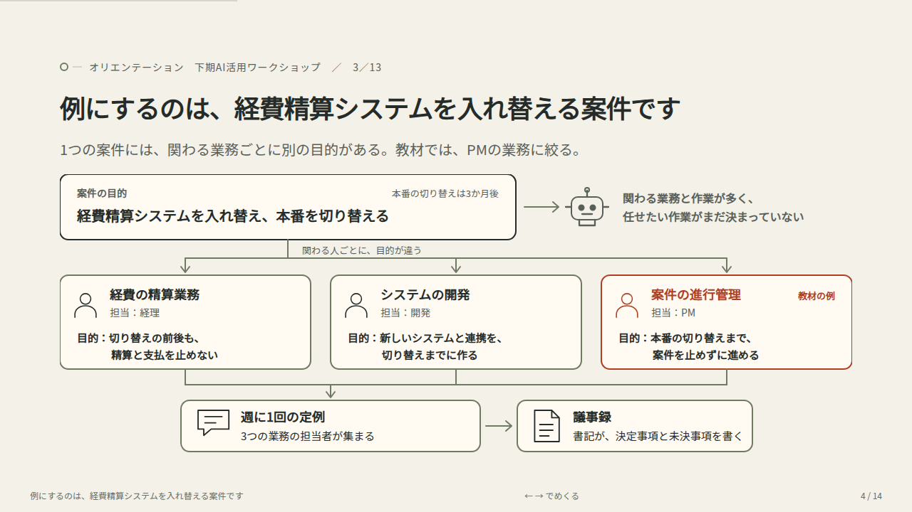
見出し 例にするのは、経費精算システムを入れ替える案件です
導入文 1つの案件には、関わる業務ごとに別の目的がある。教材では、PMの業務に絞る。
3つの教材を通して例にするのは、経費精算システムを入れ替える案件です。
本番の切り替えは、3か月後です。
案件の目的は、経費精算システムを入れ替えて、本番を切り替えることです。
この目的には、複数の業務と作業が関わっています。
AIに任せたい作業を決めるために、まず業務ごとの目的を見ます。
この案件には、3つの業務が関わっています。
経費の精算業務は、経理が担当します。
目的は、切り替えの前後も、精算と支払を止めないことです。
システムの開発は、開発が担当します。
目的は、新しいシステムと、周辺のシステムとの連携を、切り替えまでに作ることです。
案件の進行管理は、PMが担当します。
目的は、本番の切り替えまで、案件を止めずに進めることです。
3つの業務が、それぞれの目的を達成すれば、案件の目的も達成できます。
3つの業務の担当者は、週に1回、定例に集まります。
定例で決まったことと、まだ決まっていないことは、書記が議事録に書きます。
3つの教材では、このうち、PMの業務に絞って進めます。

見出し 削除・集約：例にするのは、経費精算システムを入れ替える案件です
導入文 経費精算案件の詳細紹介を導入から外した。共通題材は新6枚目で短く紹介し、詳細は教材本編へ。
この枚は新案から外しました。
経費精算案件の詳細紹介を導入から外した。
共通題材は新6枚目で短く紹介し、詳細は教材本編へ。
| 観点の群 | 結果 | 見つけたこと | 直したこと |
|---|---|---|---|
| 論とストーリー | 保留 | 経費精算案件の詳細紹介を導入から外した。共通題材は新6枚目で短く紹介し、詳細は教材本編へ。 | ユーザーによる内容・構成の確認は未実施。ここから1枚ずつ比較して確認する。 |
| 図の表現 | 保留 | 変更前の図と原稿を残して、削除・集約の妥当性を確認する。 | 変更の承認を得たという扱いにはしない。 |
削除・集約：課題整理を任せるには、PMの判断基準を共有する必要があります
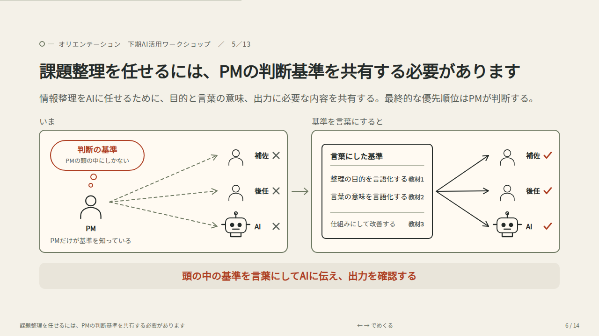
見出し 課題整理を任せるには、PMの判断基準を共有する必要があります
導入文 情報整理をAIに任せるために、目的と言葉の意味、出力に必要な内容を共有する。最終的な優先順位はPMが判断する。
課題整理には、議事録から情報を整理する作業と、優先順位を判断する作業があります。
PMは、議事録やスケジュールを確認し、どの課題が案件の進行に影響するかを判断しています。
時間を短くするために、情報を整理する作業をAIに任せたいところです。
ただ、そのための基準が、PMの頭の中にしかありません。
図の左を見てください。
基準を共有していないため、補佐や後任、AIに、何を整理してほしいかが伝わっていません。
この例でAIに入力しているのは、議事録と、課題を整理して、というプロンプトだけです。
何のために整理するのか、何を課題と呼ぶのかは伝えていません。
伝えていない内容はAIがその場で決めるので、PMが必要とする内容が出力に含まれないことがあります。
では、どうすればよいのでしょうか。
図の右です。
PMが使っている基準を言語化し、共有します。
まず、何のために課題を整理するのかを明記します。
ここでは、優先順位を判断するためです。
次に、課題という言葉が何を指すかを定義し、出力に必要な内容も決めます。
これをAIに伝え、出力が基準に合っているかを確認します。
補佐や後任にも、同じ基準を共有できます。
基準を共有しても、案件ごとの判断は必要です。
AIが整理した情報を確認し、最終的な優先順位はPMが判断します。
そのうえで、共通の基準を繰り返し使える仕組みにし、改善していきます。
では、教材1は、この場面のどこから始めるのでしょうか。

見出し 削除・集約：課題整理を任せるには、PMの判断基準を共有する必要があります
導入文 PMの課題整理に絞った判断基準の説明を外した。役割をまたぐ目的・基準の説明は新4枚目へ。
この枚は新案から外しました。
PMの課題整理に絞った判断基準の説明を外した。
役割をまたぐ目的・基準の説明は新4枚目へ。
| 観点の群 | 結果 | 見つけたこと | 直したこと |
|---|---|---|---|
| 論とストーリー | 保留 | PMの課題整理に絞った判断基準の説明を外した。役割をまたぐ目的・基準の説明は新4枚目へ。 | ユーザーによる内容・構成の確認は未実施。ここから1枚ずつ比較して確認する。 |
| 図の表現 | 保留 | 変更前の図と原稿を残して、削除・集約の妥当性を確認する。 | 変更の承認を得たという扱いにはしない。 |
削除・集約：教材2では、人や業務で違う言葉の意味を、言語化する方法を学びます
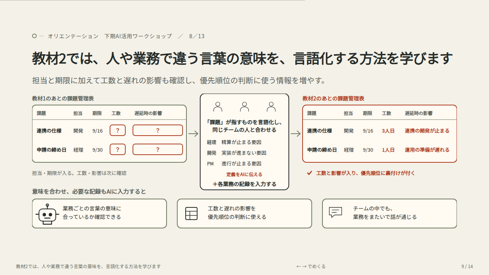
見出し 教材2では、人や業務で違う言葉の意味を、言語化する方法を学びます
導入文 担当と期限に加えて工数と遅れの影響も確認し、優先順位の判断に使う情報を増やす。
教材2は、言葉の定義です。
教材1を終えると、議事録から課題管理表が出力されるようになります。
図の左のように、連携の仕様は9月16日までに開発が決める、といった行が並びます。
ただ、この表には、まだ足りないものがあります。
その課題を決めるのに、どれだけの工数がかかるのか。
決まるのが遅れたら、何が止まるのか。
担当と期限は判断の基礎になりますが、工数や遅れの影響まで考えて優先順位を判断するには、まだ情報が足りません。
原因は2つあります。
1つは、課題に関する詳しい情報が、それぞれの業務の記録の中にあって、議事録には無いことです。
もう1つは、課題という言葉が何を指すのかが、チームの中で合っていないことです。
図の真ん中を見てください。
同じ課題という言葉でも、経理にとっては精算が止まる要因、開発にとっては実装が進まない要因、PMにとっては進行が止まる要因です。
教材2では、このように、言葉が何を指すのかを確かめ、自分で言葉にして定義します。
その定義を、同じチームの人に見せ、「これは違う」と言われた所を直して、意味を合わせます。
定義の案を立てるのは、ワークショップの参加者です。
ほかの人に求めるのは、ふだんの使い方を答えることと、案を見て違う所を言うことです。
業務によって指すものが違うときは、無理に1つの意味にまとめず、その違いも言葉にします。
こうして合わせた意味を、プロンプトや、教材3で作るSkillに書きます。
そのうえで、AIに入力するものを、それぞれの業務の記録まで広げます。
図の右のように、連携の仕様なら、3人日かかり、遅れると連携の開発が止まる、と入るようになります。
図の下が、定義と記録をAIに伝える効果です。
業務ごとの言葉の意味に合っているかを、出力で確認できます。
工数と遅れの影響も、優先順位の判断に使えます。
そして、AIだけでなく、チームの中でも、業務をまたいで話が通じるようになります。

見出し 削除・集約：教材2では、人や業務で違う言葉の意味を、言語化する方法を学びます
導入文 教材2の詳細は新6枚目に集約した。
この枚は新案から外しました。
教材2の詳細は新6枚目に集約した。
| 観点の群 | 結果 | 見つけたこと | 直したこと |
|---|---|---|---|
| 論とストーリー | 保留 | 教材2の詳細は新6枚目に集約した。 | ユーザーによる内容・構成の確認は未実施。ここから1枚ずつ比較して確認する。 |
| 図の表現 | 保留 | 変更前の図と原稿を残して、削除・集約の妥当性を確認する。 | 変更の承認を得たという扱いにはしない。 |
削除・集約：教材3では、目的と言葉の意味を、仕組みにして改善します
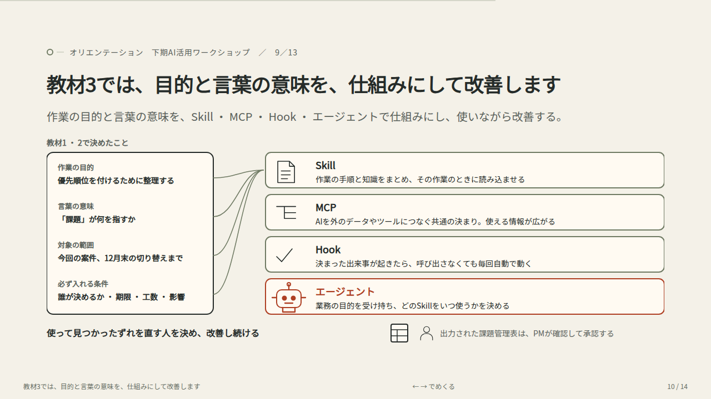
見出し 教材3では、目的と言葉の意味を、仕組みにして改善します
導入文 作業の目的と言葉の意味を、Skill ・ MCP ・ Hook ・ エージェントで仕組みにし、使いながら改善する。
教材3は、仕組みの構築です。
図の左が、教材1と教材2で決めたことです。
作業の目的、言葉の意味、対象の範囲、必ず入れる条件の4つです。
ただ、これが文書のままだと、使う人が毎回それを読んで、プロンプトに書き写すことになります。
書き写す人によって、また違いが出てしまいます。
そこで教材3では、作業の目的と言葉の意味を、誰が使っても同じように動く仕組みにし、使いながら改善していく方法を学びます。
仕組みには、図の右の4つの部品を使います。
それぞれの部品が何のためにあるかを見ていきます。
Skillは、作業の手順と知識をまとめておき、その作業のときに読み込ませるためのものです。
教材1と教材2で書いたことは、Skillに入ります。
MCPは、AIを外のデータやツールにつなぐための共通の決まりです。
AIが使える情報と、できる作業が広がります。
Hookは、決まった出来事が起きたときに、呼び出さなくても毎回自動で動きます。
毎回行うと決めたことが、抜けなくなります。
エージェントは、業務の目的を受け持ち、どのSkillをいつ使うかを決めます。
図の下のとおり、作って終わりにはしません。
使って見つかったずれを直す人を決め、仕組みを改善し続けます。
これらは、特定のAIツールの使い方ではありません。
考え方は、別のAIツールを使うときにも応用します。
利用できる部品は、使うAIツールによって違います。
ただし、AIにすべてを任せるわけではありません。
出力された課題管理表は、PMが確認して承認します。

見出し 削除・集約：教材3では、目的と言葉の意味を、仕組みにして改善します
導入文 教材3の詳細は新6枚目に集約した。MCP・Hookの詳説は導入から外した。
この枚は新案から外しました。
教材3の詳細は新6枚目に集約した。
MCP・Hookの詳説は導入から外した。
| 観点の群 | 結果 | 見つけたこと | 直したこと |
|---|---|---|---|
| 論とストーリー | 保留 | 教材3の詳細は新6枚目に集約した。MCP・Hookの詳説は導入から外した。 | ユーザーによる内容・構成の確認は未実施。ここから1枚ずつ比較して確認する。 |
| 図の表現 | 保留 | 変更前の図と原稿を残して、削除・集約の妥当性を確認する。 | 変更の承認を得たという扱いにはしない。 |
削除・集約：教材を1つ終えるごとに、AIでできることが増えます
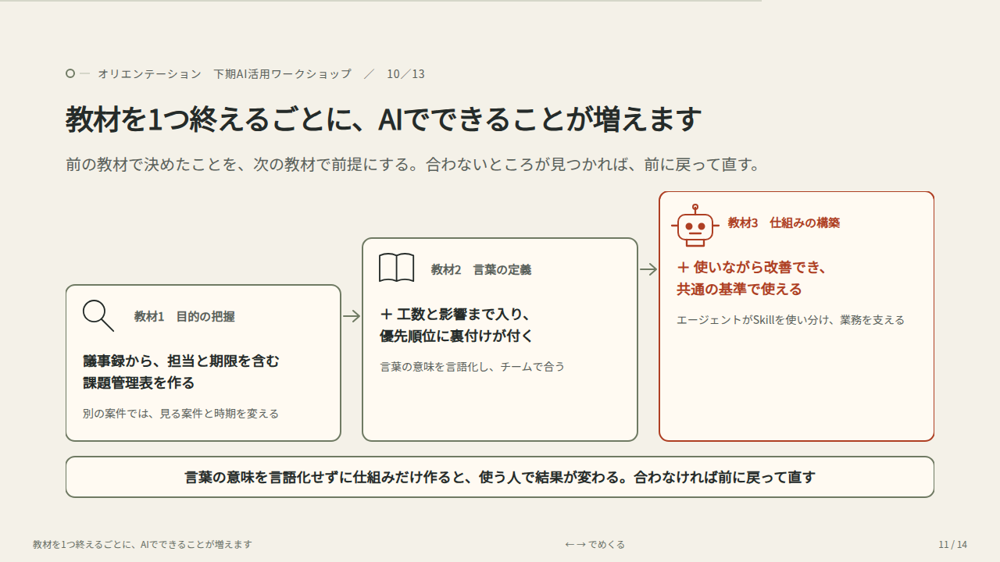
見出し 教材を1つ終えるごとに、AIでできることが増えます
導入文 前の教材で決めたことを、次の教材で前提にする。合わないところが見つかれば、前に戻って直す。
ここまでの3つの教材を、終えるごとにAIでできることで並べてみます。
教材1では、議事録から担当と期限を含む課題管理表を作るための目的と条件を決めます。
翌週も、共通の条件を使います。
別の案件で使うときは、対象の案件と時期を合わせます。
教材2を終えると、それに加えて、課題管理表に工数と、遅れたときの影響まで入ります。
優先順位に、裏付けが付きます。
言葉の意味を言語化してチームで合わせているので、同じ意味をAIに伝え、出力もその意味に合うか確認できます。
教材3を終えると、さらに、使いながら改善でき、担当が替わっても共通の基準で使えます。
エージェントがSkillを使い分けて、PMの業務を支えます。
前の教材で決めたことを、次の教材で前提にするので、教材を1つ終えるごとに、できることが増えていきます。
図の下を見てください。
この順番には、意味があります。
目的が定まっていないと、どの言葉を定義すればよいかが分かりません。
言葉の意味を言語化しないまま、仕組みだけを作ると、使う人によって結果が変わる仕組みになります。
ですから、この順番は、学ぶ順番というより、AIを目的に合わせて使うために考える順番です。
ただし、一度で決めきる必要はありません。
使ってみて合わないところが見つかれば、前の教材に戻って直します。
では、3つの教材をどのように進めていくのか、日程をお話しします。

見出し 削除・集約：教材を1つ終えるごとに、AIでできることが増えます
導入文 3教材の到達段階の詳説は新6枚目に集約した。
この枚は新案から外しました。
3教材の到達段階の詳説は新6枚目に集約した。
| 観点の群 | 結果 | 見つけたこと | 直したこと |
|---|---|---|---|
| 論とストーリー | 保留 | 3教材の到達段階の詳説は新6枚目に集約した。 | ユーザーによる内容・構成の確認は未実施。ここから1枚ずつ比較して確認する。 |
| 図の表現 | 保留 | 変更前の図と原稿を残して、削除・集約の妥当性を確認する。 | 変更の承認を得たという扱いにはしない。 |
削除・集約：教材の土台は、具体と抽象の考え方です
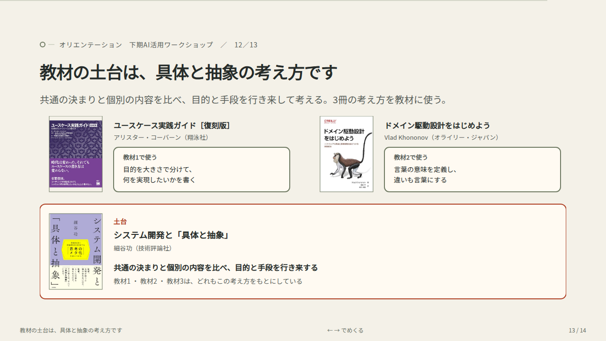
見出し 教材の土台は、具体と抽象の考え方です
導入文 共通の決まりと個別の内容を比べ、目的と手段を行き来して考える。3冊の考え方を教材に使う。
ここで、教材のもとにした書籍を紹介します。
教材だけでも進められますが、考え方を深めたい人には、おすすめです。
図の下が、土台にした「システム開発と具体と抽象」です。
具体と抽象は、比べるものどうしの関係を表します。
たとえば、毎週使う共通の条件は、その週の個別の内容より抽象的です。
目的と、そのための手段にも同じ関係があり、目的が抽象側、手段が具体側です。
この教材では、その関係を行き来して考えます。
この書籍は、その考え方を、システム開発の場面で説明しています。
3つの教材は、どれもこの考え方をもとにしています。
図の上の2冊は、この考え方と相性のよい書籍です。
「ユースケース実践ガイド」の復刻版は、目的を大きさで分けて、何を実現したいかを書く方法を説明しています。
教材1の目的レベルは、ここから取りました。
「ドメイン駆動設計をはじめよう」は、言葉の意味を定義し、意味が違うところは、その違いも言葉にする方法を説明しています。
教材2の進め方は、ここから取りました。
気になった考え方があれば、参考にしてください。
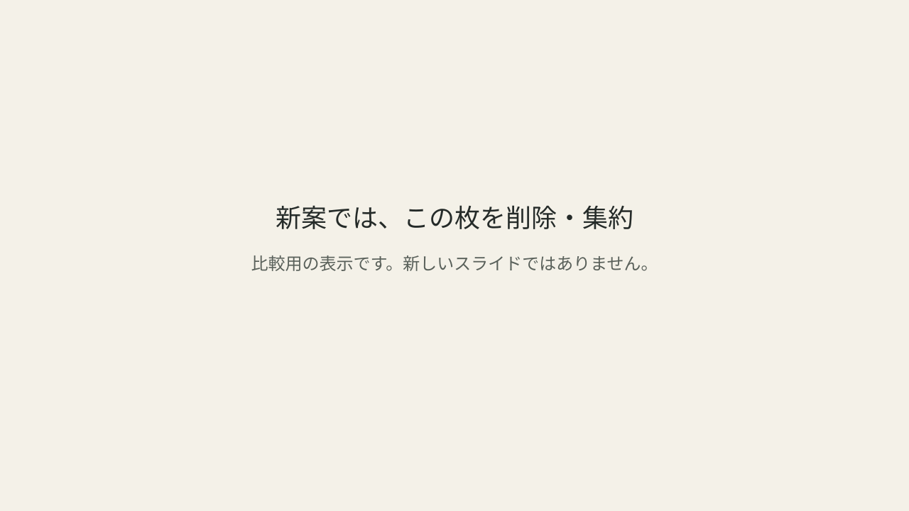
見出し 削除・集約：教材の土台は、具体と抽象の考え方です
導入文 参考書籍の詳説を参加への導入から外した。
この枚は新案から外しました。
参考書籍の詳説を参加への導入から外した。
| 観点の群 | 結果 | 見つけたこと | 直したこと |
|---|---|---|---|
| 論とストーリー | 保留 | 参考書籍の詳説を参加への導入から外した。 | ユーザーによる内容・構成の確認は未実施。ここから1枚ずつ比較して確認する。 |
| 図の表現 | 保留 | 変更前の図と原稿を残して、削除・集約の妥当性を確認する。 | 変更の承認を得たという扱いにはしない。 |